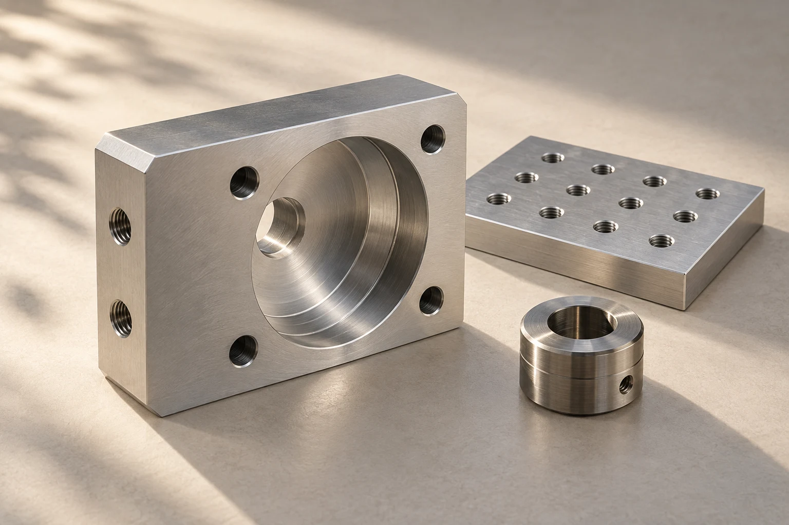

ND-14 / REPRESENTATIVE PART
Manifold body
Aluminium 6082-T6. A compact body where port alignment and a clean internal path matter.
View the part recordCNC MILLING & TURNING · BRISTOL, UK
Precision components for the equipment you build. We machine small, repeat batches with the drawing, material and inspection details kept together.

A WORKSHOP THAT FITS THE JOB
We work with engineers and buyers at equipment companies across the UK and Ireland. Your project has a named engineer before it has a quotation, so questions get resolved while changes are still straightforward.
Manifold bodies, mounting plates and enclosures. We review datums, internal features and workholding before choosing the setup.
↗Bushes, collars and sleeves. Bore fit, surface finish and concentric features stay part of the same conversation.
↗Agree the critical features, then receive the evidence you actually need for assembly and your next order.
↗A CLOSER LOOK AT THE WORK
Representative components show how we approach geometry, setup and inspection. Each example includes the material, batch and drawing questions behind the part.
ND-14 / REPRESENTATIVE PART
Aluminium 6082-T6. A compact body where port alignment and a clean internal path matter.
View the part recordND-28 / REPRESENTATIVE PART
Aluminium 6082-T6. A repeatable mounting pattern for a bench assembly station.
View the part recordND-32 / REPRESENTATIVE PART
Stainless 303. A turned interface between a sensor and its equipment housing.
View the part recordLESS LOST BETWEEN TEAMS
Good repeat work starts before the spindle turns. We keep the agreed revision, inspection points and finishing instructions visible through the job.
Confirm the model, drawing revision, material and batch quantity with your project engineer.
Clarify ambiguous features and inspection requirements before accepting the manufacturing route.
Machine and dimensionally inspect in-house. Coordinate agreed finishes with external specialists.
Pack identified parts with the agreed records, ready for your assembly and next repeat order.